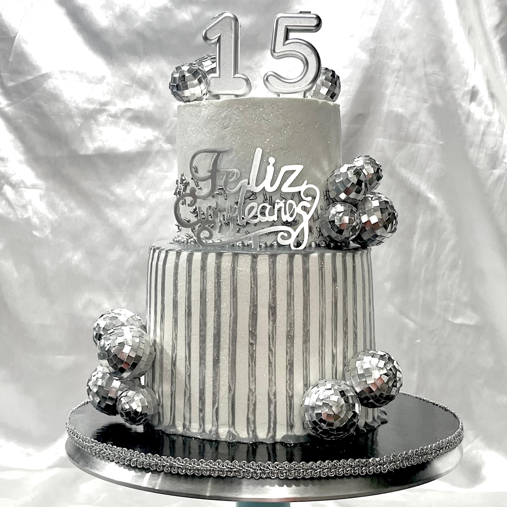
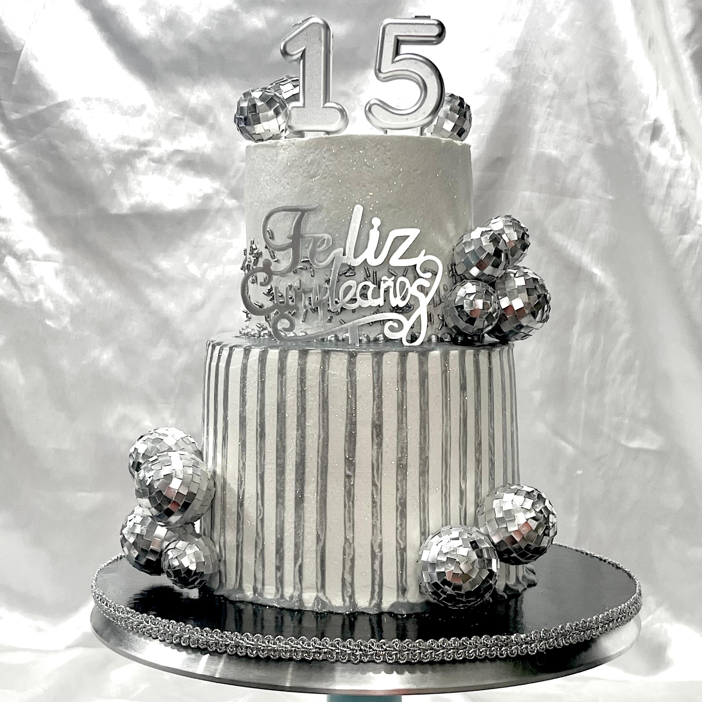
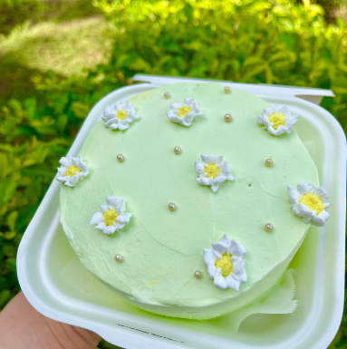
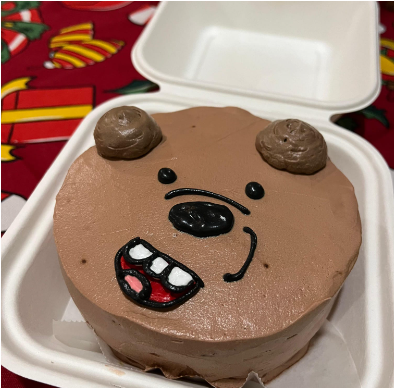

Pastel Disco en Red Velvet
El red velvet es delicioso más si tiene esta presentación. Un pastel hecho para unos 15 años, dispuesto a llamar la atención y vaya que lo hace.
!Descubre los nuevos pasteles que hemos creados, diseñadas para deleitar tu paladar!
Nada mejor que celebrar tú cumpleaños con un queque divino. La forma de corazón está en tendencia desde principios de año y aquí podemos apreciar el porque con este pastel.
El red velvet es delicioso más si tiene esta presentación. Un pastel hecho para unos 15 años, dispuesto a llamar la atención y vaya que lo hace.
Un bento de margaritas siempre va a ser la mejor opción para una reunión con tus seres queridos. Una mezcla de sabor y la delicadeza de las margaritas.
¿Conoces la serie de Escandalosos? En NAMURA creamos un osito delicioso en chocolate. Una mezcla de ternura y el toque del chocolate que no puede faltar.
